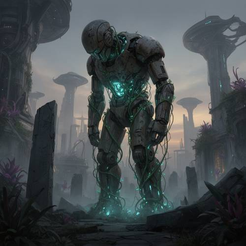
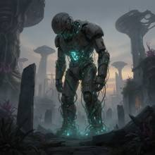

Attribute — In the ruins of an abandoned alien city, a huge robot statue looked sa
In the ruins of an abandoned alien city, a huge robot statue looked sad. Its metal body was wrapped around glowing plant vines, and vines grew out of cracks in the body.


Judge — Direct
- FAILAttribute - Expression — The robot has a static, metallic face with glowing blue eyes and a grated mouth area. The structure of its face is neutral and does not convey an expression of sadness.
- PASSGrammar - Consistency — Green vines are wrapped around the robot’s torso, legs, and shoulders. Vines are also shown emerging from the gaps and seams in the robot’s internal structure, particularly in the abdominal region.
- PASSCompound - Imagination — The image features a huge, humanoid robot standing in a city of crumbling, ruined buildings. The vines wrapped around the robot are interspersed with small, glowing yellow lights.
Judge — Continuum
- PASSAttribute - Expression — The robot statue is depicted with its head bowed and shoulders slumped, a posture that gives it a sad and dejected appearance.
- PASSGrammar - Consistency — Green vines are wrapped around the robot's metal body, including its legs, torso, and arms. Vines are also shown emerging from within the robot, specifically from a glowing cavity in its chest and from the joints, which serve as cracks or openings in its structure.
- PASSCompound - Imagination — The image features several fantastical elements: a huge, weathered robot statue as the central figure, a background filled with the ruins of a city with futuristic, non-terrestrial architecture, and plant vines that emit a bright blue-green glow.
What the agent did
Thinking
The user wants an image: ruins of abandoned alien city, huge sad robot statue, glowing plant vines wrapping its metal body, vines growing out of cracks. Generate with flux2-dev.
Step 1 — `generate_image`
{
"model": "flux2-dev",
"prompt": "A colossal ancient robot statue standing in the ruins of an abandoned alien city, its head bowed and shoulders slumped in a sad, mournful pose. Its weathered metal body is wrapped in thick, glowing bioluminescent plant vines that emit a soft teal-green light, and luminous vines sprout out of cracks in its corroded metal chest and limbs. Around it, crumbling alien architecture with strange curved towers and broken monoliths, overgrown with alien flora. Misty dusk atmosphere, cinematic wide shot, dramatic scale contrast, melancholic mood, detailed sci-fi concept art."
}Result img_0

Thinking
The image looks great: colossal robot statue, sad bowed head pose, glowing teal vines wrapped around body and growing from cracks, alien city ruins with mushroom-like towers, misty atmosphere. All elements present. Mark best and stop.
Step 2 — `mark_best`
{
"image": "img_0",
"reason": "All requested elements are present and well rendered \u2014 no further edits needed."
}Model
The image is complete and matches your description perfectly: - **Abandoned alien city ruins** — crumbling curved towers, broken monoliths, and strange mushroom-shaped alien structures fading into the mist - **Huge robot statue** — a colossal weathered metal figure dominating the scene - **Sad expression** — its head is bowed and shoulders slumped in a clearly mournful pose - **Glowing plant vines** — bioluminescent teal-green vines wrap around its entire metal body - **Vines from cracks** — luminous growth sprouts from the cracks in its corroded chest, arms, and legs The misty dusk atmosphere and overgrown alien flora complete the melancholic mood. No further edits needed — this one came out right on the first pass.